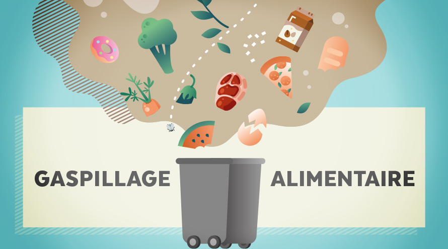

Comment lutter contre le gaspillage ?
Il existe plusieurs moyens de lutter contre le gaspillage.
Le moyen le plus facile étant la lutte individuelle :
- Elle consiste simplement a faire des actions écologique comme du trie.
Le second moyen est le plus complexe car il sagit de la lutte collective :
- Elle consiste qu'un grand nombre de personnes se réunissent pour faire des actions a grande envergure, d'ailleurs on peut en citer plusieurs comme dans les restaurants qui prosose le "Doggy Bag".
-~~-